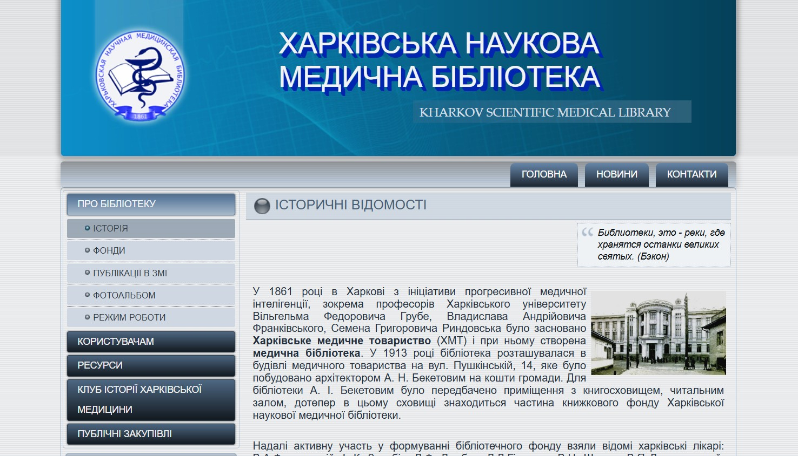

Hallo, mein Name ist
Iryna Veriukhalova
Ich habe über 10 Jahre Erfahrung im IT-Bereich als Programmiererin, Anwendungsentwicklerin und Systemadministratorin.
Aktuell konzentriere ich mich auf die Webentwicklung und vertiefe meine Kenntnisse in modernen Webtechnologien.
Über mich
Nach meinem Umzug nach Deutschland im Jahr 2022 habe ich zunächst die deutsche Sprache intensiv erlernt und konzentriere mich nun auf den Bereich Webentwicklung.
Für mich ist es besonders interessant, benutzerfreundliche, funktionale und kreative Lösungen umzusetzen. Daher möchte ich meine Kenntnisse in der Webentwicklung weiter ausbauen.
Meine IT-Kenntnisse umfassen unter anderem:
- HTML5
- Delphi
- CSS3
- SQL
- JavaScript
- CMS Joomla
Berufserfahrung
Medizinisches Kolleg / IT-Unternehmen Danko, Charkiw, Ukraine - Programmiererin
2017 - 2022
- Programmierung in Delphi und SQL-Sprachen für Buchhaltungssoftware (Anwendungsentwicklung)
- Datenbankarbeit und Entwicklung von Formen für den Datenversand
- Installieren und Konfigurieren von virtuellen Hyper-V-Maschinen
- Beratung, Kundenbetreuung, Wartung und Service
Wissenschaftliche medizinische Bibliothek, Charkiw - Systemadministratorin
2012 - 2017
- Verwaltung und technischer Support für Computerausrüstung, lokales Netzwerk und Software: Installation, Aktualisierung, Konfiguration und Reparatur
- Entwicklung und Betreuung
der Website
der Organisation (Webdesign-Programm Artisteer, CMS Joomla, Grundkenntnisse HTML, CSS, phpMyAdmin): Design, Struktur, Content-Management, Domain- und Hosting-AdministrationVerfügbar unter
http://medlibrary.kharkov.ua
(nur HTTP, kein SSL, nicht mehr gepflegt seit 2022)
Wissenschaftliche medizinische Bibliothek, Charkiw - Buchhalterin
2011 - 2012
- Entgegennahme, Verarbeitung und Kontrolle von Primärdokumenten
- Interaktion mit dem Staatsschatz und Führung von Aufzeichnungen
Abteilung für sozialen Schutz der Bevölkerung in Sozialversicherungsamt, Charkiw, Ukraine - Spezialistin
2010 - 2011
- Berechnung und Pflege der PC-Datenbank für Sozialleistungen, Wohngeld, Zulagen und Entschädigungen
- Beratung und Kundenbetreuung
Bank "Finanzen und Kredit", Charkiw - Wirtschaftlerin
2007 - 2009
- Betreuung juristischer und privater Personen
- Kundenservice für Einlagen und Kredite
- Eröffnung von Abrechnungs- und Girokonten & Transaktionen mit Bankkarten
Ausbildung
Studium der Informationssysteme im Management
Spezialistin - zwischen Bachelor und Master
(Zeugnisanerkennung in Deutschland 03.2025)
Staatliche Universität für Wirtschaftswissenschaften, Charkiw | 1994 - 1999
Abschluss: Managerin-Wirtschaftswissenschaftlerin
Studium der Betriebswirtschaft
Bachelor
Staatliche Universität für Wirtschaftswissenschaften, Charkiw | 1994 - 1998
Abschluss: Management
Studium der Programmierung für Computer und automatisierte Systeme
Juniorspezialistin
Kolleg für Patente und Computertechnologien, Charkiw | 1990 - 1994
Abschluss: Programmiererin
Weiterbildung
Grundlagen der Programmierung in HTML, CSS und JavaScript
Online-Plattform "Prometheus", Ukraine, 2025

Grundlagen der Web-UI-Entwicklung (15 Stunden)
Online-Plattform "Prometheus", Ukraine, 2025

Grundlagen der Webentwicklung (HTML, CSS, JavaScript) (30 Stunden)
Online-Plattform "Edera", Ukraine, 2025